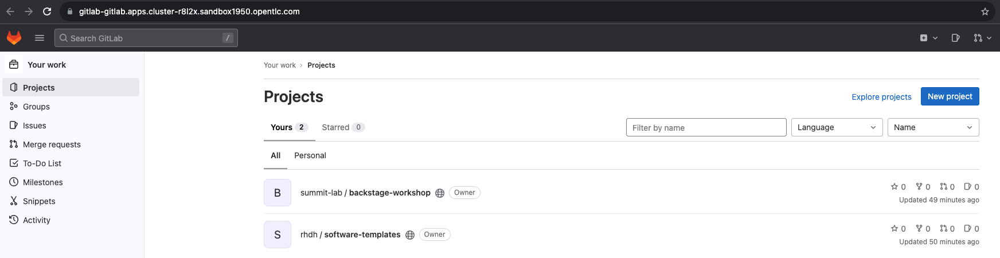

Exploring Developer Hub
Workshop Architecture
The diagram shows all the components that have integrated with Developer Hub for this lab. Now you have experienced a pathway through and populated your Catalog a little, there are now other things to explore.

Viewing the Software Template
To understand how the template flow just executed works its instructive to look at the components that make it happen. The core of that workflow is the software template (or Gold path) file which we will find in Git. This file has been registered with RHDH as a Template so that it appears in the Catalog correctly and can be executed.
Login to GitLab
Login in to GitLab using this link: GitLab
Use the credentials user1 and the password %ADMIN_PASSWORD% to login. However, the likelihood is that your login to RHDH will provide SSO cookies to access GitLab without re-authenticating.
On the GitLab home screen, you will be presented with the two template projects that are provisioned in this lab.

Click on rhdh / developer-hub-software-templates navigate to scaffolder-templates / quarkus-web-template / template.yaml

Preview the template and identify the template parameters which will be used in RHDH to create your software component. You should see near the top the list of parameters required to execute the template, most were filled in by the user, or even pre-filled by default. The whole experience is under template control, from the hints and documentation, and if needed, drop down boxes and chooser UI.
In this example of creating a new project, this may not be a frequent occurrence, but it requires precision and can be messy to unpick on error. Its good to invest time in this type of template to reduce user errors and support and make the activity as self-service as possible.
Viewing the ArgoCD Orchestration
The template orchestration is performed by ArgoCD, and this is visible in the RHDH Catalog overview. However, we can also login into the ArgCD application running on OpenShift to see the full story.
Login to ArgoCD
Login in to ArgoCD using this link: ArgoCD
Use the credentials admin and the password %ADMIN_PASSWORD% to login.
Viewing from OpenShift
We can also see all the RHDH activity from an OpenShift perspective. This allows us to view the various artifacts created by the software template such as project, pipelines and deployed applications.
Login to OpenShift Console
Login in to Developer Hub using this link: OpenShift Console
Use the credentials user1 and the password %ADMIN_PASSWORD% to login. Sometimes the SSO credentials you have for GitLab will login you in by default as user1 which is a non-privileged user.
Login to Quay
Login in to ArgoCD using this link: ArgoCD
Use the credentials admin and the password %ADMIN_PASSWORD% to login.